The Early Years – Birth to Bike
It turns out the forecast for the day I was born was probably something along the lines of “rather unsettled, with showers or thunderstorms in places, and not especially warm for late July.” So not exactly a blazing summer birthday — more of a classic British “take a coat just in case” sort of day.
That was WAY back in July 1965, so according to the chart below that makes me a Generation X baby. I was kind of hoping to be a Baby Boomer, but apparently that classification ended with those born in 1964. Missed it by that much.
Life was very different then to what it is now. Some might say it was better, although I suppose that depends on what you want from life.
We spent most of our time outside rather than sitting in bedrooms playing first-person shoot-'em-ups. We actually went outside and acted those scenarios out for real — although admittedly with sticks, toy guns and rather more imagination than graphics.
I remember having a little pedal car and a scooter that I used to charge up and down the street on when we lived in Sarn. I also remember walking up to my friend's house at the top of the street on my own. Bear in mind that all this was before I was five.
Different times.
Perhaps it was simply because the technology didn't exist. We didn't even have computers in school. The closest thing was typing lessons, and only the girls did typing. That may go some way towards explaining why, after more than 40 years working in I.T., I still type using only three — possibly four — fingers.
The girls also did cookery and home economics, while the boys did metalwork, woodwork and technical drawing. It was simply accepted as normal at the time. Looking back now, it seems remarkably rigid.
Getting Around
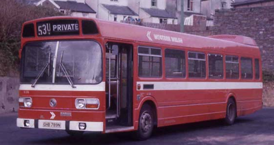
In those early years, right up until we left school and started work, getting anywhere meant walking, running or, if you were lucky enough to own one, cycling.
We never asked Dad for a lift and certainly didn't expect one. Mam didn't drive then either — in those days it was still commonly regarded as “the man's job”.
If somewhere was too far away to walk, it usually meant a trip on one of the big red Western Welsh buses. Proper full-sized buses too, and they always seemed to be busy.
If there was enough pocket money left, you could buy a Rover ticket for a pound or so and spend the whole day travelling around, go into Bridgend town centre or even make it as far as Porthcawl.
I'm fairly certain the 211 went from Bridgend Bus Station up the Garw Valley via Bettws, the 212 went up the Garw via Brynmenyn, while the 210 went through Bettws and Llangeinor before continuing towards the Ogmore Valley.
How Did We Manage Without Technology?
There were no Walkmans or MP3 players. If you were out and about and desperately needed to hear some music, one option was Dial-a-Disc.
You put your two-pence piece into a public telephone and dialled 160 to hear one of the latest chart hits in glorious crackly mono.
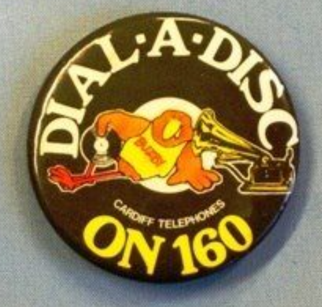
If you needed to know the time, there was the Speaking Clock. Dial 123 and a wonderfully precise recorded voice would tell you:
“At the third stroke, the time will be hour, minutes and seconds precisely.”
Music has always been a big part of my life. Nowadays you'll usually find me wandering around with a pair of Bluetooth earbuds stuck in my lugholes.
No more cold, dark, smelly phone boxes for me.
Here's a link to the music charts from the month I was born.
My First Memories... Perhaps
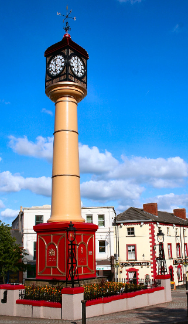
I have very, very faint — and quite possibly exaggerated — memories of our first house in Tredegar. It was a wooden bungalow beside a small stream.
I remember a lane running down the side of the house and an abandoned car being dumped there. I also remember smashing one of its headlights and cutting my hand on the broken glass.
Mam says that never happened.
Dad says there wasn't even an abandoned car there.
So that's a promising start for an autobiography.
I also remember the enormous swimming pool in the back garden.
Nope. Wrong again.
It was a little fish pond. My sister and I used to paddle in it when the weather was nice. Apparently being three feet tall does wonders for the perceived size of things.
Mam tells me that one day I wanted to go to the park. She was busy and told me she'd take me later.
I wanted to go then.
So, when her back was turned for a minute, I decided to walk there by myself.
Long story short: Mam eventually collected me from the police station.
She says I was sitting on the counter wearing a policeman's hat and had the biggest grin imaginable on my face.
Apparently my mother's emotional state was somewhat different.
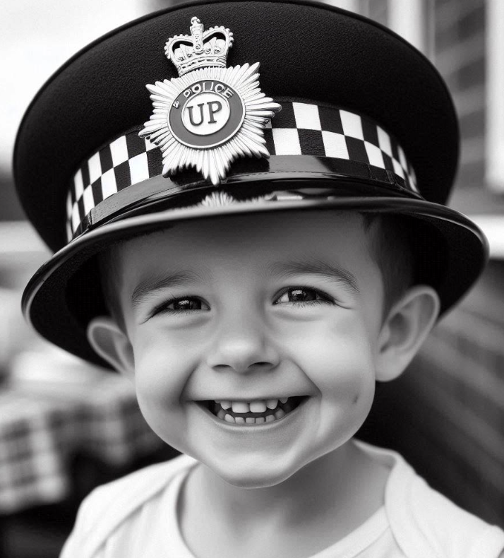
I drove back to Tredegar a couple of years ago and somehow managed to find the house despite not knowing the address.
I just seemed to know which way to go.
Perhaps those unsupervised adventures as a three-year-old left more of an impression than I thought.
Sarn
We moved from Tredegar to Sarn when I was about two or three years old.
I vividly remember the shortcut from our house towards school. It was just a narrow path between two houses leading onto the main road.
There was a little shop opposite the end of the lane which sold sweets. It's been converted into flats now, but back then, if we'd been good, we might be treated to a penny chew.
Mam would then walk Susan and me along the main road to Bryncethin Junior and Infants School, drop us off and walk back later to collect us.
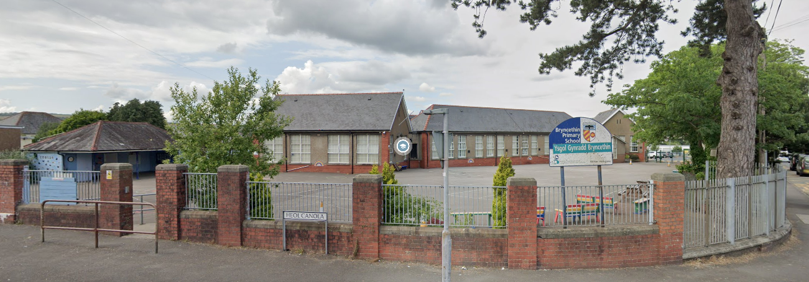
I don't have many memories of the school itself. I remember my classroom being in the furthest corner of the building with playing fields beyond it.
Near the school gates was what I remember as an enormous shelter where we went during wet playtimes.
When I look at it now, it's tiny.
Once again, childhood memory appears to use a very generous zoom setting.
Grandpa and I also had a little secret about our house in Park Place. We were apparently the only two people who knew what had been buried beneath the foundations of the shed.
I always assumed this was just a family joke until Dad asked me, quite seriously, a year or so ago:
“What actually was buried under that shed?”
Well, after all these years I can finally reveal the truth.
It was an old bathroom suite.
The smashed-up remains of a toilet and sink.
Not quite the buried treasure people may have been hoping for.
Behind that shed was where we'd have our bonfire and fireworks.
I can distinctly remember Catherine wheels being pinned to the shed and spinning for hours, spraying sparks for miles.
Obviously they did nothing of the sort, but that's how I remember them.
And the rockets launched from old milk bottles?
I'm fairly sure I saw one land on the Moon.
Llangeinor Post Office
And so to my next home: Llangeinor Post Office.
My parents bought the Post Office from one of Mam's aunts and uncles, and I continued my education at Tynyrheol Primary School.
This would have been the beginning of my junior-school years, and I have some very fond memories of both the place and its teachers.
Every school day began with a third of a pint of milk in a little glass bottle — some government scheme presumably designed to stop us getting scurvy or rickets or something equally unpleasant.
There was even a designated milk monitor each day.
I have absolutely no idea what the milk monitor's responsibilities were, but clearly it was important enough for me to remember the job more than fifty years later.
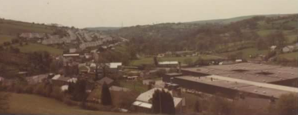
Dinner was served in the “new” building, which also masqueraded as a classroom. A huge sliding partition separated the two areas and I think it may also have doubled as an indoor gymnasium.
Behind the canteen/dining hall/classroom/gym was a farm where livestock was slaughtered. They also had kennels for the hounds from the Llangeinor Hunt.
Sometimes the smell from there was terrible — something approaching roadkill that had been left in the sun for two weeks.
Mix that aroma with the smell of school potatoes and cabbage and suddenly lunchtime wasn't quite as appealing.
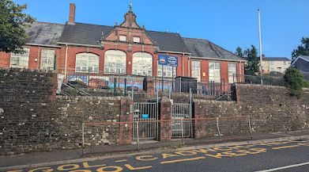
The toilets were outside in a separate brick building. The boys had a wall to pee against and a couple of cubicles for anything requiring greater concentration.
There was an enormous oak tree at the back of one of the infants' yards where we'd make racing tracks for our Matchbox cars or simply run around it like fools.
Sadly, the tree has gone now.
In the front junior-school yard we'd play British Bulldog or a football game that involved kicking the ball against the school wall until somebody missed and was out.
The yard outside the canteen was laid out mainly as a basketball court, which always seemed slightly odd. I think one of the teachers had been a basketball player in his younger days.
I was only about 2'6" tall back then, so unsurprisingly I was never selected for the basketball team.
One year, though, we had a sponsored basketball-throwing competition where you collected sponsorship money for every successful basket.
I may be remembering this incorrectly, but despite my complete lack of height and obvious sporting pedigree, I think I scored the most baskets.
I also managed to get my head stuck between the railings on the steps leading from that yard towards the toilets.
I have no explanation for that.
School Sport
We played rugby on the football field and travelled to other junior schools for matches.
I remember being given a brand-new rugby shirt which Pitman subsequently stole from me after a match.
I was hopeless at rugby, but I clearly remember Michael Furlong scoring a try and thinking:
“Wow! If he can do that, so can I.”
I never did.
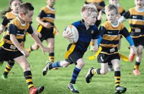
The one sport I actually was good at was swimming.
I don't remember whether we had swimming competitions at junior school, although given how close we were to the pool I suppose we probably did.
I became joint club champion one year and received a wonderfully naff trophy: a gold-coloured plastic swimmer diving from a white marble base.
I can't remember whether that was the individual trophy or whether there was also a cup, but I do remember having to hand one of them back after six months so that the other joint winner could proudly display it for the remainder of the year.
I used to love school back then.
The Comprehensive Years
Next came comprehensive school.
Year One was spent at the old Garw Grammar School in Pontycymmer, where Dad had also gone as a boy.
I was placed in form 1A2.
There wasn't much pretence at academic equality in those days. Pupils were very visibly streamed according to how well the school thought they were likely to perform.
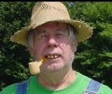
The classes were roughly graded like this:
- A1 – The very top academic group; they even did Latin.
- A2–A4 – The other higher academic groups.
- A5 – Just below them.
- B1–B4 – Less academically focused classes.
- B5 and C1 – Pupils who needed more support.
- C2 and C3 – Often pupils who struggled within the conventional school system.
Pupils with disabilities, learning difficulties or language barriers were often placed in the lower streams too. Looking back, it seems clear that schools simply weren't very well equipped to teach children who didn't fit the expected mould.
From Year Two until I left school I attended Ynysawdre Comprehensive.
For some reason, from Year Four onwards the “A” classes were renamed “E”, so I became E2.
Whether the E stood for Excellence, Exams or something completely different, I have no idea.
The school buildings themselves weren't exactly inspiring. Built in the 1970s on the site of the former Ynysawdre coal mine — which before that had been Ynysawdre Farm — they seemed to be constructed from something resembling cardboard, with various Portakabins scattered around pretending to be classrooms.
The entire complex, including Archbishop McGrath school next door, was eventually demolished and replaced. The site is now home to Coleg Cymunedol Y Dderwen, which looks considerably more modern than anything we had.
Archbishop McGrath Catholic Comprehensive was right next door.
There was a definite rivalry between the two schools. The unofficial border was the heating and gas-pipe gantry that ran between them, and anybody with any sense tended not to venture too far beyond it.
Science — Before Health and Safety Took Over
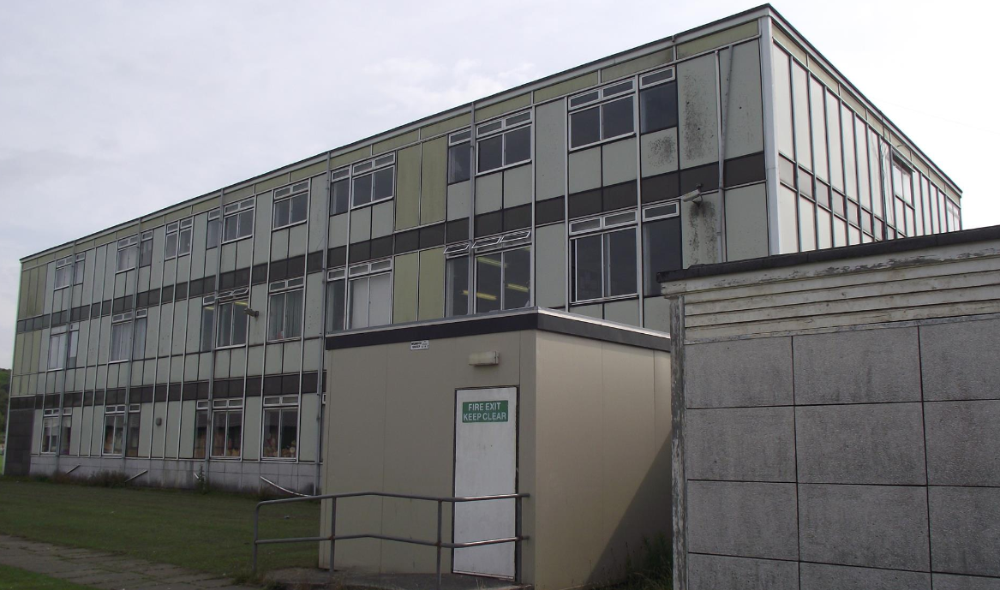
I loved chemistry with Mr Naughton.
Health and safety hadn't really entered the school vocabulary yet, so chemistry lessons generally revolved around unpleasant chemicals, Bunsen burners and, occasionally, mercury.
There was none of today's protective equipment. We apparently belonged to the educational philosophy that if something burned, exploded or gave off a suspicious cloud of smoke, there was probably a useful lesson hidden in there somewhere.
Most of us survived.
Physics taught me many useful things too, although some of the experiments I remember probably wouldn't make it past a modern risk assessment.
Biology was different.
Cutting small animals apart in a classroom somehow seemed wrong.
That sort of thing belonged outside up the lane behind Dai Bayliss's garage on a sunny evening, not on a school desk.
Bridgend College
During my fifth year at comprehensive school I chose the option of attending Bridgend College to study Electrical and Electronic Engineering.
Sounds grand, doesn't it?
I was issued with a travel card which was only valid on certain bus routes — specifically the 211 and 212.
Unfortunately, I had a girlfriend who lived up the Ogmore Valley, which required the 210.
So I made a very small unofficial amendment to my travel card.
It worked perfectly for a couple of months until a bus driver with unusually good eyesight spotted my handiwork and confiscated it.
Fortunately, the course was nearly finished by then so the financial damage wasn't too severe.
Lunch breaks at college were often spent in the little arcade above Astey's chip shop playing Space Invaders — I preferred the two-button controls to the left-right joystick — or Asteroids.
Ten pence a go.
My dinner money rarely lasted very long.
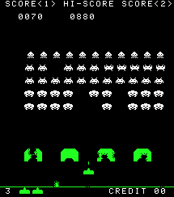
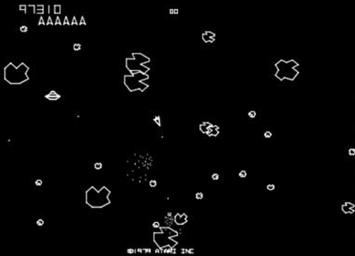
University wasn't really something most of us considered. Unless you were among the top academic pupils and destined to become a doctor, scientist, solicitor or something equally impressive, you generally left school and got a job.
Some went to college, but most of us went straight into employment.
That thing they call a “gap year” now?
We used to call it being unemployed.
After a lot of job hunting, I was fortunate enough to secure an Army apprenticeship.
Just after turning sixteen I would leave home and move to the Army Apprentices College in Chepstow to train as an electrician.
More of that later.
Enough of School — Back to the Important Stuff
During our seemingly endless time away from school, we were outside almost constantly, usually returning home only when we needed food or it was time for bed.
Our little gang consisted mainly of Dai Bayliss, Mark Allen, myself — obviously — and occasionally we'd allow Mark's brother Gareth to join us.
There were others who came and went, but that was the core group.
Frenchie — Mark Allen — Dai, Gareth and I would spend hours running around and getting lost in the pine forests, building camps in the woods surrounding Llangeinor or playing down beside the Garw River.
We'd build dams, look for guppies or simply wander around looking for something to do.
I sank up to my waist in the orange bog down there more than once.
Or we'd climb Llangeinor Mountain all the way to the television mast.
Why?
Because it was there.
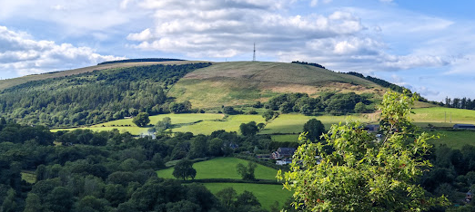
There weren't many overweight kids around in those days.
One memory of Mark still makes me laugh every time I think about it.
We were climbing trees when he discovered that he could swing the top of one tree far enough to climb across into the neighbouring one.
Everything was going remarkably well until I heard a loud CRACK, followed by several smaller cracks and finally an enormous THUMP!
Mark had landed flat on his back on top of an anthill.
That was the day he discovered that not all trees are manufactured to the same standards of strength and flexibility.
Frisbees, Air Rifles and CB Radios
We spent hours outside the swimming baths in the evenings throwing a Frisbee backwards and forwards, trying to perfect our technique.
I went back there recently and the whole area is overgrown now. There is no obvious sign of the paved area where we used to stand.
The only clue that anything was ever there is a solitary street lamp still standing in the far corner nearest the river.
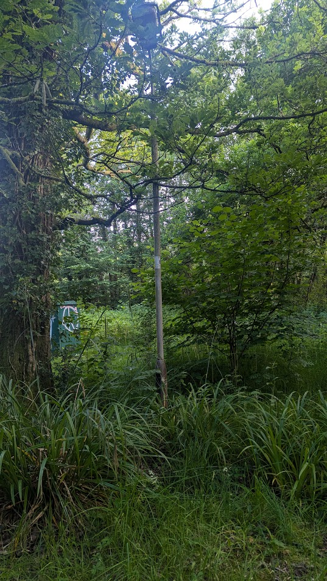
Dai and I also had air rifles. Mine was a Diana .177 bought second-hand from a shop on Cowbridge Road West in Cardiff.
We spent hours plinking at targets and generally behaving in ways that would probably horrify most parents today.
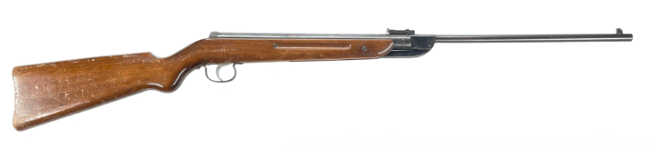
We also had CB radios and were absolutely determined to talk to each other from our respective houses.
We lived only about 600 metres apart.
We never managed it.
I could speak to complete strangers dozens of miles away, but apparently communicating with Dai just down the road was beyond the capabilities of radio technology.
Dai would come up to my house and we'd mess around in the living room above the shop until one of my parents came upstairs to investigate what sounded like a herd of elephants charging around above their heads.
According to them, the ceiling was always about to collapse.
It never did.
We even recorded our own version of The Kenny Everett Video Show onto cassette.
At the time we thought we were hilarious.
I still have those tapes somewhere.
I really ought to find them.
I suspect they're terrible.
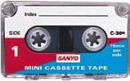
A Room With a View
My bedroom was another storey above the living room, effectively on the third floor, right up in the attic.
It had a large dormer window overlooking the swimming pool, playing fields and railway line.
When I was about fourteen I became obsessed with counting the coal wagons as the trains went past.
Usually there were 33.
Sometimes as many as 38.
I don't know whether other children went through a phase like this, but I counted everything: bricks in walls, railings in fences, wagons on trains...
Llangeinor Disco
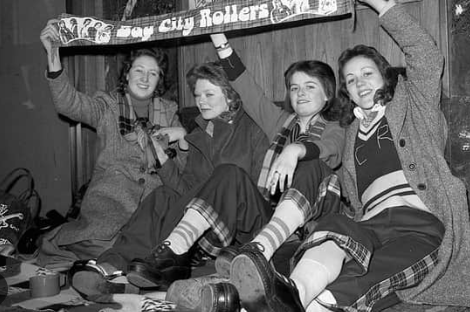
Then there was Llangeinor disco.
This was the place to be in the early evening.
It was held in the legendary Richard Price Centre — or the Richard Rice Centre, as we called it after the letter P fell off the sign.
My neighbour Chris was the DJ for a while and played a wonderfully eclectic mixture of music.
Remember, the late 1970s was arguably one of the best periods ever for music. We had heavy metal, the tail end of rock and roll, psychedelic music, enormous rock bands playing endless guitar riffs, punk, new wave, ska, reggae, two-tone, love songs...
And unfortunately, disco.
I couldn't dance to save my life, but anybody can pogo or slowly rotate in circles to a love song, so somehow I managed.
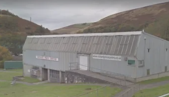
The girls would dance in lines opposite their friends.
The boys sat around the edges looking moody, waiting for Chris to play some punk or heavy metal.
One evening he played Friggin' in the Riggin' by the Sex Pistols.
One of the committee members stormed onto the stage, pulled the record off the turntable and snapped it in half while muttering something about not having to listen to that sort of filth in there.
I also remember riding my skateboard down the very steep path beside the Richard Rice Centre towards the car park.
I lost control.
I landed on my head.
The resulting lump on my forehead was roughly the size of a tennis ball.
No concussion protocol. No CT scan.
I presumably just went home.
Chris, Bikes and the Swimming Pool
The previously mentioned Christopher Thomas and I spent a lot of time together too.
He was a year older than me and fancied my sister, which is probably the real reason he tolerated having me around.
When the weather was bad we'd play Subbuteo in his front room. When it was good we'd play cricket on the common or down the football field.
We also went on mammoth bike rides together over the Bwlch and Rigos mountains.
No Lycra in those days.
Jeans if it was cold, shorts if the sun was out.
Chris's father was a farmer and owned the land between our houses and the Garw River.
On the opposite bank was probably my favourite place of all: Llangeinor Swimming Pool.
I spent a huge amount of time in and around that pool.
One day Mark and I were having a two-man underwater swimming competition. I managed three lengths without coming up for air.
Mark tried to equal it.
I seem to remember that he was sick afterwards.
We'd also wedge ourselves beneath the ladder at the deep end and see who could stay underwater the longest.
I think that was Mark's idea.
Before I was thirteen I'd completed my Bronze, Silver, Gold and Honours Personal Survival awards along with the one-mile and two-mile swimming awards.
I think it may have been the promise of an Oxo drink from the vending machine in the foyer afterwards that kept me going.
Happy Valley
Holidays were often spent at the caravan in Happy Valley with my grandparents.
They were the best holidays ever.
I'd walk through the sand dunes into Porthcawl and, if I had any money left after buying those little Commando war-story books, I'd fritter the rest away in the penny slots at Coney Beach or on freshly cooked sugary doughnuts.
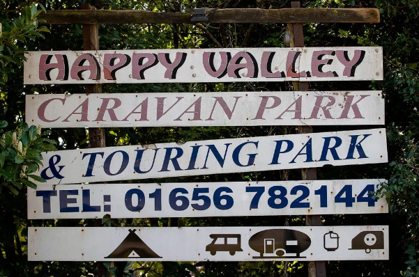
Being something of a ladies' man 🙂 I would inevitably acquire a holiday girlfriend most years at Happy Valley.
Only one relationship survived beyond the end of the summer holidays: Annmarie from Newport.
The others apparently wanted nothing further to do with me and may well have deliberately avoided Happy Valley thereafter just in case I turned up again.
I'd get the train to Newport to visit Annmarie and her father would collect me from the station.
We'd go back to their house, where I'd be fed sandwiches — perhaps I looked undernourished — and then we'd go out to meet her friends, wander around the estate, visit Newport Shopping Centre or generally do whatever teenagers did when neither had any money.
When Annmarie stayed at Happy Valley she came with her best friend's family.
Coincidentally, a few years later that friend — Debbie, I think — started seeing one of the apprentices at Chepstow, who turned out to be a friend of mine.
Small world.
Freedom
Looking back, I think I was very lucky.
I was probably given more freedom than many of my friends.
I would regularly go cycling alone to Porthcawl, up over the Bwlch and sometimes all the way towards the top of the Rhigos.
Swimming was another thing I was quite happy doing by myself.
In some ways not much has changed.
I still enjoy doing most things on my own, still enjoy disappearing off somewhere just to see where a road or path goes, and I'm still perfectly happy with my own company.
Perhaps those childhood wanderings explain rather more about the person I eventually became than I realised.
There are far more memories than I've managed to get onto this page.
I'll have to keep adding them as they come back to me.